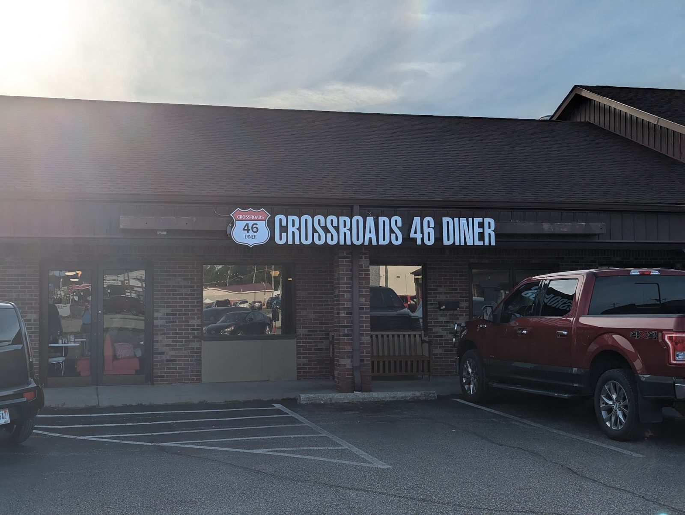

Country fried steak
Smothered in white gravy. A house favorite.
Diner · Spencer, IN
Meatloaf, country fried steak and coconut pie. Friendly staff, a clean room, fair prices.

Plain good food
A few of the plates from our kitchen.
Smothered in white gravy. A house favorite.

A bacon cheeseburger with a pile of crinkle fries.

Eggs, hash browns and toast with a bowl of gravy on the side. The doors open at 6 AM Monday through Saturday.


4.5 ★ · 844 Google reviews
GUEST CHECK№ 1Super clean and welcoming. Friendly waitress. Food was phenomenal. Super affordable prices. Drove from Ellettsville to try it and so glad we did! New favorite place!
GUEST CHECK№ 2Great lil diner with small town feel! Waitress was polite and great with kids. Quick service food was great as well!
GUEST CHECK№ 3Prices are up everywhere, including suppliers. I don't complain about prices unless the food is not desirable. Staff were attentive and welcoming. Clean. Food and drinks were great. Were there April 13,2023 around 10am. Plenty of parking and comfortable seating. I love supporting the mom n pops.

Since the first pot of coffee
Crossroads 46 Diner sits on W Morgan St in Spencer. Inside it is red booths, blue chrome chairs and a wall of old black-and-white photos.
A great little diner with a small-town feel. Attentive, welcoming staff, quick service and a friendly hand with kids.
Slide on in
661 W Morgan St, Spencer, IN 47460
Plenty of parking and comfortable seating.